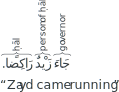

Not ready for study.
35 The ḥāl
THIS BOOK IS A WORK IN PROGRESS. IT IS INCOMPLETE AND MAY HAVE TYPOGRAPHICAL AND OTHER ERRORS. IT IS NOT YET READY FOR STUDY.
35.1 Introduction
The ḥāl (ٱلْحَال) is a kind of adverb, governed typically by a verb, that describes the state of the person of ḥāl during the time that the ḥāl’s governing verb is taking place. Here is an example of a ḥāl:
In the example above, the usage of the ḥāl signifies that Zayd, while he was coming, was in a riding state.
By the way, we are not not using “state” here terminologically, as in u-state, a-state, etc. Rather we are using it to mean Zayd’s condition or mode of being.
35.2 Matching the ḥāl to the person of ḥāl
Consider again the example:
- جَاءَ زَيْدٌ رَاكِبًا [Wright 2/112C]
“Zayd came riding”
The ḥāl رَاكِبًا is an adjectival noun matching the person of ḥāl زَيْد in number (singular) and gender (masculine).
If the person of ḥāl is feminine in gender or more than one in number, then the ḥāl will match it accordingly. For example:
قَامَتِ ٱبْنَتُهُ إِلَيْهِ بَاكِيَةً [Fischer 196D]
“His daughter [went and] stood to him crying”وَثَبَا مُسْرِعَيْنِ [صحيح البخاري :4794]
“they2m got up hastening”جَاءَ سَعِيدٌ وَخَالِدٌ رَاكِبَيْنِ [النحو العربي: أحكام ومعان 2/38]
“Saɛīd and K͡hālid came riding.”
For plurals, both sound and broken plurals may be used:
وَٱدْخُلُوا ٱلْبَابَ سُجَّدًا [سورة البقرة 2:58]
“and enter the gate bowing humbly”
(The person of ḥāl is the plural masculine doer pronoun in ٱدْخُلُوا and the ḥāl سُجَّد is the plural of سَاجِد.)خَرَجْنَا مُتَوَجِّهِينَ إِلَىٰ ٱلْيَمَنِ [Fischer 196D]
“We left heading towards Yemen”
As with attributes and infos, when the person of ḥāl is a plural of non-intelligent beings, the singular feminine is typically used for the ḥāl. For example:
- صَالَتِ ٱلْأُسُودُ عَلَى ٱلْفَرِيسَةِ فَاتِكَةً
“The lions pounced on the prey slaying”
35.3 The governor of the ḥāl
The governor of the ḥāl may be one of the following:
A verb
The verb is the typical governor of the ḥāl. For example:
- جَاءَ زَيْدٌ رَاكِبًا [Wright 2/113D]
“Zayd came riding”
A maṣdar
- رُكُوبُكَ ٱلسَّيَارَةَ مُسْرِعَةً خَطَرٌ عَلَيْكَ [النحو العربي: أحكام ومعان 2/51]
“Your riding the car speeding is a danger for you.”
A quasi-verb
A quasi-verb is a deverbal verbal noun like an doer participle or an doee participle, or an adjectival noun, etc. For example:
زَيْدٌ ضَارِبٌ عَمْرًا قَائِمًا [Wright 2/113D]
“Zayd is beating Ɛamr standing.”زَيْدٌ حَسَنٌ قَائِمًا [Wright 2/113D]
“Zayd is handsome standing.”زَيْدٌ قَائِمًا أَحْسَنُ مِنْهُ قَاعِدًا [Wright 2/114A]
“Zayd, standing, is more handsome than him sitting.”
An expression that has verbal force
An expression that has verbal force could be:
- a preposition or adverb of time or place with a following noun in the i-state
- a pointing noun
- a question word
- a word like لَيْتَ, كَأَنَّ, لَعَلَّ
In such cases there will typically be the implicit existential verb “is” providing the verbal force.
Examples:
زَيْدٌ فِي ٱلدَّارِ قَائِمًا [Wright 2/114A]
“Zayd is in the house standing.” (the existential verb “is” is implied)هَـٰذَا عَمْرٌو مُنْطَلِقًا [Wright 2/114A]
“This is Ɛamr (in the act of) setting out.”وَهَـٰذَا بَعْلِي شَيْخًا [سورة هود 11:72 cited by Wright 2/114B]
“and this, my husband, is an old man”مَا شَأْنُكَ قَائِمًا [Wright 2/114B]
“What is your matter, standing?”
(i.e. “Why are you standing?”)مَا لَكَ وَاقِفًا [Wright 2/114B]
“What (happened) to you, standing?”
(i.e. “Why are you standing?”)
35.4 Valid persons of ḥāl
The person of ḥāl may be the doer of the governing verb but it may also be the direct doee, or even other nouns in a sentence.
Let’s see some examples.
The person of ḥāl as a doer
- فَخَرَجَ مِنْهَا خَائِفًا [سورة القصص 28:21]
“So he left it, fearful”
The person of ḥāl as a direct doee
وَأَرْسَلْنَاكَ لِلنَّاسِ رَسُولًا [سورة النساء 4:79]
“And We have sent you, [O Muḥammad], to the people as a messenger”رَكِبْتُ ٱلْفَرَسَ مُسْرَجًا [Wright 2/113A]
“I rode the horse saddled”
The person of ḥāl as a deputy doer
- تُؤْكَلُ ٱلْفَاكِهَةُ نَاضِجَةً [النحو العربي: أحكام ومعان 2/28]
“The fruit is eaten fresh”
The person of ḥāl as a subject
- ٱلْفَاكِهَةُ لَذِيذَةٌ نَاضِجَةً [النحو العربي: أحكام ومعان 2/28]
“The fruit is delicious (when it is) fresh.”
The person of ḥāl as a info
- هَـٰذَا هُوَ ٱلْهِلَالُ طَالِعًا [النحو العربي: أحكام ومعان 2/28]
“This is the crescent (as it is) rising.”
The person of ḥāl in the i-state following a preposition
مَرَرْتُ بِزَيْدٍ جَالِسًا [Wright 2/113A]
“I passed by Zayd (as he was) sitting.”كُنْتُ فِي ٱلْبُسْتَانِ زَاهِرًا [Wright 2/113B]
“I was in the garden (while it was) in bloom.”
The person of ḥāl in the i-state in as the base noun in an annexation
The base noun in an annexation is permitted to be a person of ḥāl if it satisfies any one of the following conditions:
When the annexe noun is naturally capable of being the governor of the ḥāl (as a maṣdar or doer participle, etc.). For example:
أَعْجَبَنِي قِيَامُ زَيْدٍ مُسْرِعًا [Wright 2/119C]
“Zayd’s standing speedily pleased me.”
(The governor is the annexe noun قِيَام which is a maṣdar)إِلَى ٱللَّـٰهِ مَرْجِعُكمْ جَمِيعًا [سورة المائدة 5:105]
“To Allāh is your return all together”
(The governor is the annexe noun مَرْجِع which is a maṣdar)أَنْتَ شَارِبُ ٱلْمَاءِ صَافِيًا [النحو العربي: أحكام ومعان 2/50]
“You are drinking the water clear.” (The governor is the annexe noun شَارِب which is a doer participle)
When the annexe noun is a real part of the base noun. For example:
وَنَزَعْنَا مَا فِي صُدُورِهِم مِّنْ غِلٍّ إِخْوَانًا [سورة الحجر 15:47]
“And We will remove whatever is in their breasts of resentment, [so they will be] brothers”
(The annexe noun صُدُور is a real part of the base noun person of ḥāl هِمْ.)أَيُحِبُّ أَحَدُكُمْ أَنْ يَأْكُلَ لَحْمَ أَخِيهِ مَيْتًا [سورة الحجرات 49:12]
“Would one of you like to eat the flesh of his brother when dead?”
(The annexe noun لَحْم is a real part of the base noun person of ḥāl أَخ.)
When the annexe noun is not really but is virtually a part of the base noun. Such that the meaning would still be correct if the annexe noun was removed. For example:
- ثُمَّ أَوْحَيْنَا إِلَيْكَ أَنِ ٱتَّبِعْ مِلَّةَ إِبْرَاهِيمَ حَنِيفًا [سورة النحل 16:123]
“Then We revealed to you, [O Muḥammad], to follow the religion of Abraham, inclining toward truth”
(حَنِيفًا is a ḥāl of the person of ḥāl إِبْرَاهِيم. مِلَّة is virtually a part of إِبْرَاهِيم such that the meaning is correct without it: ٱتَّبِعْ إِبْرَاهِيمَ حَنِيفًا.)
- ثُمَّ أَوْحَيْنَا إِلَيْكَ أَنِ ٱتَّبِعْ مِلَّةَ إِبْرَاهِيمَ حَنِيفًا [سورة النحل 16:123]
When none of these conditions are satisfied then the base noun cannot be a person of ḥāl. So we cannot say:
- ✗ مَرَرْتُ بِغُلَامِ هِنْدٍ جَالِسَةً [النحو العربي: أحكام ومعان 2/51]
“I passed by Hind’s slave boy (when she was) sitting.”
Determining the person of ḥāl when there is more than one possibility
When the sentence has more than one noun as a possible person of ḥāl, usually the meaning, gender, or number is sufficient to determine whom the ḥāl is describing. But sometimes context will be needed to determine who the person of ḥāl is. For example:
- قَابَلْتُ ٱلْأَخَ رَاكِبًا [النحو الوافي 2/386A]
“I met the brother riding”
In the example above, the ḥāl رَاكِبًا may be applicable to either the speaker (assuming he is male), or to ٱلْأَخ “the brother”. Context should tell us which is intended. If context is not sufficient then is more suitable for the closer of the two to the ḥāl to be the person of ḥāl. Or, to avoid ambiguity, it may be better that the expression not be used in this case.1
35.5 The ḥāl after verbs like رَأَىٰ and وَجَدَ
The verbs رَأَىٰ and وَجَدَ are what are known as verbs of perception (see chapter (ref)). That is, they signify an act that takes place in the mind. So they may take two direct doees. For example:
إِنَّهُمْ يَرَوْنَهُ بَعِيدًا [سورة المعارج 70:6]
“Indeed, they see it [as] distant,”
(بَعِيدًا has been analyzed as a second direct doee2)لَوَجَدُوا ٱللَّهَ تَوَّابًا رَحِيمًا [سورة النساء 4:64]
“they would have found Allāh Accepting of Repentance and Merciful.”
(تَوَّابًا has been analyzed as a second direct doee3)
However, if these verbs are mere verbs of sense, i.e. they express nothing but acts of the external organs of sense, then they may still have two governees in the a-state but the second governee will no longer be a direct doee but a ḥāl.4 For example:
رَأَيْتُكَ نَائِمًا [Wright 2/50C]
“I saw you sleeping.”وَجَدْتُهُ مَرِيضًا [Wright 2/50C]
“I found him sick.”
35.6 Multiple ḥāls or persons of ḥāl
There may be one or multiple ḥāls that correspond to one or multiple persons of ḥāl. This occurs in the following cases:
35.6.1 Multiple ḥāls for one person of ḥāl
These are examples of multiple ḥāls corresponding to one person of ḥāl:
وَلَمَّا رَجَعَ مُوسى إِلى قَوْمِهِ غَضْبانَ أَسِفًا [سورة الأعراف 7:150]
“And when Moses returned to his people, angry and grieved”ارْجِعِي إِلَى رَبِّكِ رَاضِيَةً مَرْضِيَّةً [سورة الفجر 89:28]
“Return to your Lord, well-pleased and pleasing [to Him]”مَا لَكِ يَا عَائِشُ حَشْيَا رَابِيَةً [صحيح مسلم :974b]
“Why are you, O Ɛāʾis͡hah, panting and short of breath?”
(حَشْيَا, on the pattern فَعْلَىٰ, is the feminine of حَشْيَان meaning “short of breath”. رَابِيَة has a similar meaning.)
As you can see, there is no need for a conjunction like و to connect the multiple ḥāls (though we may use the word “and” in the translation). If such a و is inserted, then the noun(s) following it is technically no longer a ḥāl. Rather, it is now a post-conjunction to the preceding ḥāl.5 For example:
- أَقْبَلَ ٱلْمُنْتَصِرُ فَرِحًا وَمُسْرِعًا وَمُصَافِحًا رِفَاقَهُ [النحو الوافي 2/430]
“The victor approached rejoicing, hastening, and shaking hands with his companions.”
In the above example, فَرِحًا is a ḥāl, مُسْرِعًا and مُصَافِحًا are post-conjunctions.
This distinction is technically correct. However, loosely speaking, words like مُسْرِعًا and مُصَافِحًا in the example above may be referred to as ḥāls.6
See also section (ref) later in this chapter for multiple ḥāls when one or more is a sentence ḥāl.
35.6.2 One ḥāl for multiple persons of ḥāl
If there are multiple persons of ḥāl and the same ḥāl can be used to describe all of them, then one ḥāl, appropriately dualized or pluralized, may be used. We have already seen an example of this in example (4) earlier in this chapter:
- جَاءَ سَعِيدٌ وَخَالِدٌ رَاكِبَيْنِ [النحو العربي: أحكام ومعان 2/38]
“Saɛīd and K͡hālid came riding.”
Here is another example:
- وَسَخَّرَ لَكُمُ ٱلشَّمْسَ وَٱلْقَمَرَ دَائِبَيْنِ [سورة إبراهيم 14:33]
“And He subjected for you the sun and the moon, continuous [in orbit]”
Sometimes the multiple persons of ḥāl may even occur in different functions in the sentence. For example:
قَابَلَ عَلِيٌّ صَدِيقَهُ مَسْرُورَيْنِ [النحو العربي: أحكام ومعان 2/28]
“Ɛaliyy met his friend (while they both were) happy.”لَقِيتُهُ رَاكِبَيْنِ [Wright 2/113B]
“I met him (while we both were) riding”
35.6.3 Multiple ḥāls for multiple persons of ḥāl
If there are multiple persons of ḥāl, and each is to be described by different ḥāls, then the individual ḥāls may occur in the sentence without any conjunction. If context and meaning are not sufficient to determine which ḥāl applies to which person of ḥāl, then the first ḥāl (in sentence word order) should apply to the second person of ḥāl, and the second ḥāl should apply to the first person of ḥāl.7 For example:
- لَقِيتُ خَالِدًا مُصْعِدًا مُنْحَدِرًا [النحو العربي: أحكام ومعان 2/39]
“I met K͡hālid (while he was) going up (and Im was) coming down.”
But if meaning and context are sufficient to disambiguate, then the ḥāls may occur in either order. For example:
- لَقِيتُ هِنْدًا مُصْعِدًا مُنْحَدِرَةً [النحو العربي: أحكام ومعان 2/39]
“I met Hind (while Im was) going up (and she was) coming down.”
35.7 Definiteness of the ḥāl
The ḥāl is typically an indefinite noun, as we have seen in all the examples so far. Occasionally, however, it does occur as a definite noun. The most common such ḥāl is the noun وَحْد annexed to a pronoun, meaning “alone”. For example:
- جَاءَ ٱلضَّيْفَ وَحْدَهُ [النحو الوافي 2/375]
“The guest came by himself.”
Other definite nouns may also occur as ḥāls. For example:
ٱدْخُلُوا ٱلْأَوَّلَ فَٱلْأَوَّلَ
[النحو الوافي 2/376]
“Enter! the first then the first”
(i.e. “Enter in order”)كَلَّمْتُهُ فَاهُ إِلَىٰ فِيَّ [النحو العربي: أحكام ومعان 2/34]
“I spoke to him his mouth to my mouth.”
(i.e. face to face)
The definite ḥāl may also occur in a comparative statement. For example:
- زَيْدٌ ٱلرَّاكِبَ أَحْسَنُ مِنْهُ ٱلْمَاشِي [Wright 2/116D]
“Zayd as the rider is more handsome than he is (as) the walker.”
Although, it is more usual to use the indefinite ḥāl in this case: زَيْدٌ رَاكِبًا أَحْسَنُ مِنْهُ مَاشِيًا.
35.8 Definiteness of the person of ḥāl
The person of ḥāl is typically a definite noun, as we have seen in all the examples so far. Sometimes, however, it does occur as an indefinite noun. Usually, when the person of ḥāl is indefinite, it occurs in the following circumstances:
The ḥāl precedes the indefinite person of ḥāl
- فِيهَا قَائِمًا رَجُلًا [Wright 2/117B]
“in it (i.e. the house) is a man standing”
The order of the ḥāl and the person of ḥāl is treated in more detail in section (ref).
The indefinite person of ḥāl is qualified by a attribute or a base noun
عِنْدِي غُلَامُ رَجُلٍ قَائِمًا [Wright 2/117D]
“in my house is a man’s slave standing”قَدِمَ طِفْلٌ صَغِيرٌ بَاكِيًا [النحو العربي: أحكام ومعان 2/45]
“a small child came crying”وَبَارَكَ فِيهَا وَقَدَّرَ فِيهَا أَقْوَاتَهَا فِي أَرْبَعَةِ أَيَّامٍ سَوَاءً لِّلسَّائِلِينَ [سورة فصلت 41:10 cited by النحو العربي: أحكام ومعان 2/45]
“and He blessed it and determined therein its [creatures’] sustenance in four days without distinction - for [the information of] those who ask.”
The indefinite person of ḥāl is in a negative statement or a question
مَا خَابَ عَامِلٌ مُخْلِصًا [النحو الوافي 2/403]
“A worker, when sincere, does not fail.”لَا تَشْرَبْ فِي كُوبٍ مَكْسُورًا [النحو الوافي 2/403]
“Don’t drink in a cup (when it is) broken.”أَجَاءَ أَحَدٌ رَاكِبًا [النحو العربي: أحكام ومعان 2/44]
“Did anyone come riding?”
The indefinite person of ḥāl without any special circumstance
Occasionally, the person of ḥāl may be indefinite without any special circumstance.8 For example:
- وَصَلَّى وَرَاءَهُ قَوْمٌ قِيَامًا [صحيح البخاري :1113]
“and [some] people prayed behind him standing”
35.9 The order of the ḥāl, the person of ḥāl and the governor
The normal order is: first the governor, then the person of ḥāl, then the ḥāl. However, there is much variability permitted, subject to certain rules.
35.9.1 The ḥāl preceding the governor
The ḥāl may precede the governor if the governor is an verb or quasi-verb that flexes based on the doer.
So we can say:
رَاكِبًا جَاءَ زَيْدٌ [Wright 2/118B]
“Zayd came riding.”مُسْرِعًا ذَا رَاحِلٌ [Wright 2/118B and النحو العربي: أحكام ومعان 2/53]
“In haste is this this (man) departing.”
(ذَا is a pointing noun like هَـٰذَا. See section (ref).)مُخْلِصًا زَيْدٌ دَعَا [add ref to alfiyyah ibn malik]
“Sincerely did Zayd supplicate.”
(The ḥāl مُخْلِصًا precedes not just its governor in the info دَعَا, but also the subject زَيْدٌ.)
If the governor is a verb or adjectival noun that is rigid (does not flex based on the doer), then the ḥāl rarely9, if ever10, precedes the governor. Examples of such governors are the verb of wonder and the comparative noun. For example:
مَا أَحْسَنَ زَيْدٌ ضَاحِكًا [Wright 2/118B]
(not ✗ ضَاحِكًا مَا أَحْسَنَ زَيْدٌ)
“How handsome is Zayd (when) laughing!”زَيْدٌ أَحْسَنُ مِنْ عَمْرٍو ضَاحِكًا [Wright 2/118B]
(not ✗ زَيْدٌ ضَاحِكًا أَحْسَنُ مِنْ عَمْرٍو)
“Zayd is more handsome than Ɛamr (when) laughing.”
An exception is permitted when a noun, in one ḥāl, is compared with itself or another noun in another ḥāl. In this case, the ḥāl regularly precedes its comparative noun governor. For example:
زَيْدٌ قَائِمًا أَحْسَنُ مِنْهُ قَاعِدًا [Wright 2/118C]
“Zayd when standing is more handsome than [himself] when sitting.”زَيْدٌ مُفْرَدًا أَنْفَعُ مِنْ عَمْرٍو مُعَانًا [Wright 2/118C]
“Zayd when alone is more useful than Ɛamr when assisted (by others).”
If the governor is not a verb or a quasi-verb but an expression that has verbal force, then the ḥāl usually does not precede the governor.11
كَأَنَّ زَيْدٌ رَاكِبًا أَسَدٌ [Wright 2/118D]
(not ✗ رَاكِبًا كَأَنَّ زَيْدٌ أَسَدٌ)
“[It is] as if Zayd, when riding, is a lion.”زَيْدٌ فِي ٱلدَّارِ قَائِمًا [Wright 2/118D]
(not ✗ زَيْدٌ قَائِمًا فِي ٱلدَّارِ)
“Zayd is in the house standing.”تِلْكَ هِنْدٌ بَاحِثَةً [النحو العربي: أحكام ومعان 2/53]
(not ✗ بَاحِثَةً تِلْكَ هِنْدٌ)
“That is Hind, searching.”
35.9.2 The ḥāl preceding the person of ḥāl
The ḥāl is generally allowed to precede the person of ḥāl when the person of ḥāl is in the u-state or a-state. For example:
جَاءَ ضَاحِكًا زَيْدٌ [Wright 2/119A]
“Zayd came riding.”شَرِبْتُ ٱلْمَاءَ صَافِيًا [النحو العربي: أحكام ومعان 2/48]
“I drank the water clear.”
Excepted from this general permissibility is if the person of ḥāl is restricted by إِلَّا. For example:
مَا جَاءَ أُسَامَةُ إِلَّا رَاكِبًا [النحو العربي: أحكام ومعان 2/48]
“Usāmah did not come except riding.”وَمَا نُرْسِلُ ٱلْمُرْسَلِينَ إِلَّا مُبَشِّرِينَ وَمُنْذِرِينَ [سورة الأنعام 6:48]
“And We send not the messengers except as bringers of good tidings and warners.”
When the person of ḥāl is in the i-state then: if it is a base noun in an annexation, then the ḥāl should follow the person of ḥāl and not precede it.
For example:
- أَعْجَبَنِي قِيَامُ زَيْدٍ مُسْرِعًا [Wright 2/119C]
“Zayd’s standing speedily pleased me.”
If the person of ḥāl is in the i-state due to a preceding preposition, then the ḥāl will usually follow it and not precede it. For example:
- مَرَرْتُ بِهِنْدٍ جَالِسَةً [Wright 2/119B]
“I passed by Hind (when she was) sitting.”
Occasionally, however, the ḥāl has been found to precede the i-state person of ḥāl preceded by a preposition. For example:
- وَمَا أَرْسَلْنَاكَ إِلَّا كَافَّةً لِلنَّاسِ [سورة سبأ 34:28]
“And We have not sent you except comprehensively to mankind”
35.9.3 Reasons for varying the normal order
The natural order, as we have mentioned, is: first the governor, then the person of ḥāl, then the ḥāl. So normally we would say:
- حَضَرَ مُحَمَّدٌ مَاشِيًا [النحو العربي: أحكام ومعان 2/55]
“Muḥammad came walking.”
The speaker may choose to vary this normal order for a variety of reasons. For example, if Muḥammad had been previously hampered from walking due to an illness or injury, then in order to emphasize his being able to walk, the speaker may say:
- حَضَرَ مَاشِيًا مُحَمَّدٌ [النحو العربي: أحكام ومعان 2/55]
Or if the listener was incorrectly assuming that Muḥammad came riding and not walking, then the speaker may wish to disabuse him by saying
- مَاشِيًا حَضَرَ مُحَمَّدٌ [النحو العربي: أحكام ومعان 2/55]
There may be other reasons as well.12
35.10 Transitory and permanent meanings for the ḥāl
Fundamentally, the ḥāl is transitory in its meaning; i.e. it is not meant to be a permanent description of the person of ḥāl. For example:
جَاءَ سَعِيدٌ غَاضِبًا [النحو العربي: أحكام ومعان 2/28]
“Saɛīd came angry”أَقْبَلَ خَالِدٌ رَاكِبًا [النحو العربي: أحكام ومعان 2/28]
“K͡hālid came riding.”
In the above examples, the ḥāls غَاضِبًا “angry” and رَاكِبًا “riding” are meant to be transitory descriptions, such that it is conceivable that Saɛīd may cease to be angry, and that K͡hālid could come walking instead of riding.
However, it is possible that the ḥāl have a more permanent meaning. This is primarily when the ḥāl describes person of ḥāl as it comes in to existence or relevance.
For example:
وَخُلِقَ ٱلْإِنْسَانُ ضَعِيفًا [سورة النساء 4:28]
“and mankind was created weak”قَالَتْ رَبِّ إِنِّي وَضَعْتُهَا أُنْثَىٰ [سورة آل عمران 3:36]
“she said, ‘My Lord, I have delivered a female.’”وَلَدَتْهُ أَزْرَقَ ٱلْعَيْنَينِ أَفْطَسَ ٱلْأَنْفِ [النحو العربي: أحكام ومعان 2/29]
“She gave birth to him blue-eyed (and) snub-nosed”
The ḥāl may also have a more permanent meaning in the sense that while it describes the person of ḥāl linked in time to the governor, its meaning also applies more permanently to the person of ḥāl. For example:
- وَهَـٰذَا صِرَاطُ رَبِّكَ مُسْتَقِيمًا [سورة الأنعام 6:126 cited by النحو العربي: أحكام ومعان 2/30]
“And this is the path of your Lord, [leading] straight”
(The ḥāl مُسْتَقِيمًا “straight” applies permanently to the person of ḥāl صِرَاطُ رَبِّكَ “path of your Lord”)
35.11 Difference in meaning between the ḥāl and the attribute
The ḥāl and the the attribute are typically both sourced from adjectival nouns. And generally when you use the adjectival noun as a ḥāl it will have a different meaning from when it is used as a adjectival noun.
Consider the following two examples:
هَـٰذَا ٱلْفَرَسُ ٱلسَّابِقُ [معاني النحو 2/334]
“This is the foremost horse.”هَـٰذَا ٱلْفَرَسُ سَابِقًا [معاني النحو 2/334]
“This is the horse (when it is) foremost”
The former sentence is describing the horse as being foremost, but not necessarily at the time when the speaker is pointing to it. So, at the moment of pointing to it, the horse may actually be tethered. Whereas the latter sentence is describing the horse at the moment of pointing at it. It would likely be running and and being foremost at that time.
Similarly, consider:
أَقْبَلَ ٱلطَّالِبُ ٱلْمُقَصِّرُ [معاني النحو 2/333]
“The slacking student approached.”أَقْبَلَ ٱلطَّالِبُ مُقَصِّرًا [معاني النحو 2/333]
“The student approached (while) slacking.”
The same distinction appiles to the above two examples. The former sentence describes the student as a slacker generally. But he may not be slacking at the moment when he is approaching. Whereas the latter sentence describes the student as slacking when he is approaching. He may not be a slacker in general.
However, there can sometimes be some overlap in meaning.13 For example, in the scenario when all the following conditions are satisfied:
- the ḥāl has a transitory meaning,
- the meaning of the ḥāl is a description of motion or posture (like “sitting”, “standing”, “sleeping”, “running”, etc.),
- the person of ḥāl is indefinite,
- the governor is an expression that has verbal force (see section (ref)).
In such a case, the adjectival noun used as a attribute may have a somewhat similar meaning to it being used a ḥāl. For example:
فِيهَا رَجُلٌ قَائِمٌ
“In it (i.e. the house), is a standing man.”
(attribute)فِيهَا رَجُلٌ قَائِمًا
[سيبويه 1/272 cited by معاني النحو 2/352]
“In the house, is a man standing.”
(ḥāl)
There may also be a case where the ḥāl is indistinguishable from the attribute due to the person of ḥāl being indefinite and in the a-state. For example:
- رَأَيْتُ طَالِبًا مُقَصِّرًا [معاني النحو 2/352]
“I saw a student slacking.”
or
“I saw a slacking student.”
35.12 An primitive noun as the ḥāl
Because the ḥāl is a description of the person of ḥāl, and a description is likely to be a adjectival noun, and adjectival nouns are typically deverbal nouns, it therefore follows that the ḥāl is likely to be a deverbal noun. Most of the examples we have seen so far have been of the ḥāl as a deverbal noun. For example: رَاكِبًا, غَاضِبًا, etc. However, it is possible for the ḥāl to be primitive noun. Here are some examples:
طَلَعَ ٱلْقَمَرُ بَدْرًا [Wright 2/115A]
“The moon rose (as) a full moon.”كَرَّ زَيْدٌ أَسَدًا [Wright 2/115A]
“Zayd charged (like) a lion.”بِعْهُ مُدًّا بِدِرْهَمٍ [Wright 2/115A]
“Sell it (at the rate of) a mudd for a dirham”
(a mudd is a measure of volume)بِعْتُ ٱلشَّاءَ شَاةً وَدِرْهَمًا [Wright 2/115A]
“I sold the sheep (at the rate of) a sheep [for] a dirham.”بَايَعْتُهُ يَدًا بِيَدٍ [Wright 2/115A]
“I traded with him hand in hand”
(i.e. for ready money)بَيَّنْتُ لَهُ حِسَابَهُ بَابًا بَابًا [Wright 2/115A]
“I explained his account for him item by item.”دَخَلَ ٱلْقَوْمُ رَجُلًا رَجُلًا [النحو العربي: أحكام ومعان 2/30]
“The people entered, man by man.”كَلَّمْتُهُ فَاهُ إِلَىٰ فِيَّ [Wright 2/115B]
“I spoke to him his mouth to my mouth.”
(i.e. face to face)هَـٰذَا عِنَبًا أَطْيَبُ مِنْهُ زَبِيبًا [Wright 2/115B]
“This (fruit), as a grape, is better than it as a raisin.”وَكَذَ ٰلِكَ أَنْزَلْنَاهُ قُرْآنًا عَرَبِيًّا [سورة طه 20:113 cited by النحو العربي: أحكام ومعان 2/33]
“And thus We have sent it down as an Arabic Qur’ān”هَـٰذِهِ أَمْوَالُكَ ذَهَبًا [النحو العربي: أحكام ومعان 2/34]
“These are your wealths, as gold.”هَـٰذِهِ فِضَّتُكَ خَاتَمًا [النحو العربي: أحكام ومعان 2/34]
“This is your silver, as a ring.”هَـٰذَا خَاتَمُكَ فِضَّةً [النحو العربي: أحكام ومعان 2/34]
“This is your ring, in silver”
35.13 A maṣdar as the ḥāl
The maṣdar can sometimes appear to be a ḥāl. For example:
- أَقْبَلَ عَلِيٌّ رَكْضًا [معاني النحو 2/345]
“Ɛaliyy approached (in the state of) running.”
In the above example, the opinion of some scholars would be that the maṣdar رَكْضًا is a ḥāl. And this is a substitute for saying أَقْبَلَ عَلِيٌّ رَاكِضًا.
When the maṣdar is used thus it remains in the indefinite singular regardless of the number of the persons of ḥāl. For example:
- أَقْبَلَ ٱلْقَوْمُ رَكْضًا
“The people approached running.”
The reasons for using a maṣdar رَكْضًا in this way instead of the adjectival noun رَاكِضًا may be:
Emphasis. The maṣdar signifies purely the meaning of the verb “to run”. Whereas the adjectival noun signifies the meaning of the verb along with person described by the adjectival noun (the runner). So using the maṣdar as a ḥāl draws attention to the meaning of running rather than the person who is running. The maṣdar used in this way can also be seen as a sort of metaphor, as if Ɛaliyy, while executing the action of running, became the act of running.14
Expanding the sense of the adverb to incorporate other adverbs. The maṣdar رَكْضًا, in the above example, can also be analyzed as an absolute doee (being a deputy to the maṣdar إِقْبَال) meaning:
- أَقْبَلَ عَلِيٌّ إِقْبَالَ رَكْضٍ [معاني النحو 2/348]
“Ɛaliyy approached (in) the type of approaching (that is) running.”
The use of the maṣdar in this way could then be used to intend both the ḥāl meaning and the absolute doee meaning together. That is Ɛaliyy’s type and state of approaching was running.
Depending on the meaning of the maṣdar, other types of adverbs, like the adverb of reason, may be included in this expanded sense as well.15
- أَقْبَلَ عَلِيٌّ إِقْبَالَ رَكْضٍ [معاني النحو 2/348]
Some scholars are conservative in analyzing a maṣdar as a ḥāl, and instead prefer that it be analyzed as another adverb, like a (deputy) absolute doee or an adverb of reason, etc.16 And if the meaning of the maṣdar does not allow it to be analyzed as another adverb, and only as a ḥāl then it is accepted as a permitted usage but one that is restricted to what has been recorded from Classical Arabic.
Here are some examples of maṣdars having being analyzed as ḥāl. They may fit other adverbs instead or as well.
قَتَلْتُهُ صَبْرًا [Wright 2/114C]
“I killed him in cold blood.”كَلَّمْتُهُ مُشَافَهَةً [شرح ابن يعيش على المفصل 2/12]
“I spoke to him face to face.”يَدْعُونَ رَبَّهم خَوْفًا وطَمَعًا [سورة السجدة 32:16]
“they supplicate their Lord in fear and aspiration”
(خَوْفًا (above) is analyzed as either a adverb of reason or a ḥāl.17)ٱلَّذِینَ یُنْفِقُونَ أَمْوَالَهُمْ بِٱلَّيْلِ وَٱلنَّهَارِ سِرًّا وَعَلَانِیَةً [سورة البقرة 2:274]
“Those who spend their wealth [in Allāh’s way] by night and by day, secretly and publicly”
(سِرًّا is analyzed as either a ḥāl or a attribute to a deleted absolute doee إِنْفَاقًا.18)إنَّ الَّذِينَ يَأْكُلُونَ أمْوالَ اليَتامى ظُلْمًا [سورة النساء 4:10]
“Indeed, those who devour the property of orphans unjustly”
(ظُلْمًا (above) is analyzed as either a adverb of reason or a ḥāl.19)حَتَّىٰ إِذَا جَاءَتْهُمُ ٱلسَّاعَةُ بَغْتَةً [سورة الأنعام 6:31]
“until when the Hour [of resurrection] comes upon them unexpectedly”
(بَغْتَةً (above) is analyzed as either a ḥāl or a absolute doee.20)
35.14 A sentence as the ḥāl
In the examples so far, the ḥāl has always been a single word, usually an adjectival noun. For example, جَاءَ زَيْدٌ ضَاحِكًا “Zayd came laughing”. Instead, of using the adjectival noun ضَاحِكًا, we can instead use the u-state stateful verb يَضْحَكُ:
- جَاءَ زَيْدٌ يَضْحَكُ [Wright, 2/331C]
“Zayd came laughing.”
Actually, يَضْحَكُ is not just a verb. Rather, it is a complete sentence comprising of the verb itself and the doer which, in this case, is the hidden pronoun “he”. So the ḥāl here is a sentence.
As we know, the ḥāl describes the person of ḥāl during time of ḥāl’s governing verb. The use of the stateful verb يَضْحَكُ signifies that Zayd’s action of laughing was ongoing during the time of the governor جَاءَ. So يَضْحَكُ has a past meaning because of the perfect verb جَاءَ. An additional verb like كَانَ is not needed to transport the verb يَضْحَكُ to the past. Similarly, if the governor was in the present or the future, the stateful verb in the ḥāl would automatically be transported to the present or future as well. For example:
- سَيَأْتِي زَيْدٌ يَضْحَكُ
“Zayd will come laughing.”
In fact, it is not permitted for the ḥāl sentence that begins with the stateful verb to itself be prefixed with سَ or سَوْفَ.21 So we cannot say (intending سَيَضْحَكُ to be a ḥāl):
- ✗ سَيَأْتِي زَيْدٌ سَيَضْحَكُ or
✗ يَأْتِي زَيْدٌ سَيَضْحَكُ
This restriction only applies to stateful verbs that begin a sentence ḥāl. If a stateful verb begins a sentence that is not a ḥāl then it may begin with سَ or سَوْفَ. For example:
- وَقَالَ إِنِّى ذَاهِبٌ إِلَىٰ رَبِّى سَيَهْدِينِ [سورة الصافات 37:99]
“And [then] he said, ’Indeed, I will go to [where I am ordered by] my Lord; He will guide me.”
Here are some more examples of sentence ḥāls comprised of a stateful verb and a doer (or deputy doer) pronoun:
- وَجَاءُوا أَبَاهُمْ عِشَاءً يَبْكُونَ [سورة يوسف 12:16]
“And they came to their father at night, weeping.”
35.14.1 The link between the sentence ḥāl and the person of ḥāl
The sentence comprising of only the stateful verb and its doer is the simplest, and one of the most common, kind of ḥāl sentence. However, more complex ḥāl sentences are also possible. And the person of ḥāl need not always be the doer of the verb in the sentence.
But the sentence ḥāl needs to have a link between it and the person of ḥāl. This link is often a pronoun that refers back to the person of ḥāl. In the examples above this link pronoun was the doer pronoun of the stateful verb. Here is an example of a more complex ḥāl sentence:
- جَاءَ زَيْدٌ يَدُهُ عَلَىٰ رَأْسِهِ [Wright, 2/331A]
“Zayd came (with) his hand on his head.”
In the example above, the sentence يَدُهُ عَلَىٰ رَأْسِهِ is the ḥāl. Note that يَد is in the u-state because it is the subject of the sentence. It is not in the a-state because it is not, by itself, the ḥāl. The entire sentence يَدُهُ عَلَىٰ رَأْسِهِ is considered to be in the a-state as the ḥāl. The link is the pronoun ه in يَدُهُ and رَأْسِهِ.
Here are some more examples:
- ٱهْبِطُوا۟ بَعْضُكُمْ لِبَعْضٍ عَدُوٍّ [سورة البقرة 2:36]
“Go down, [all of you], as enemies to one another”
(The sentence بَعْضُكُمْ لِبَعْضٍ عَدُوٍّ is the ḥāl. The link is the pronoun كُمْ in بَعْضُكُمْ.)
35.15 The و of ḥāl and its rules
Instead of, or in addition to, a pronoun as the link between the sentence ḥāl and the person of ḥāl, a special و, called the و of ḥāl, may be used. The و of ḥāl signifies that the sentence ḥāl occurred while the governing verb took place. Here are some examples of the the و of ḥāl:
قَامَ زَيْدٌ وَهَوَ بَاكٍ [Wright 2/330C]
“Zayd stood up while he was crying.”أَنَّ رَسُولَ اللَّهِ صلى الله عليه وسلم مَرَّ بِسَعْدٍ وَهُوَ يَتَوَضَّأُ [سنن ابن ماجه :425]
“that the Messenger of Allāh ﷺ passed by Saɛd while he was performing ablution”
We have defined the ḥāl as an adverb that describes the person of ḥāl. However, sometimes, the ḥāl sentence that is linked with a و of ḥāl won’t apparently describe the person of ḥāl. In fact, it may not even refer to the person of ḥāl at all. For example:
- ذَهَبَ زَيْدٌ وَعَمْرٌو يَشْتَغِلُ [Wright 2/331A]
“Zayd went while Ɛamr was busy.”
In the example above, the ḥāl’s description of the person of ḥāl is only circumstantial, in that it alludes to the time in which the action of the governing verb occurred. In such cases the meaning of the ḥāl approaches that of the adverb of time. This is another of the cases where the lines between different types of adverbs get blurred. We have seen similar cases in sections (ref). Here are some more examples:
Depending on the sentence, the و of ḥāl can be either mandatory, optional, or disallowed.
Let’s go over the different types of ḥāl sentences, and discuss the ruling of the و of ḥāl in each type of sentence.
35.15.1 The ḥāl sentence is a nounal sentence
When the ḥāl sentence is a nounal sentence, then there are three possibilities:
The ḥāl sentence is devoid of a pronoun referring back to the person of ḥāl. In this case, the و of ḥāl is obligatory. For example:
- مَرَرْتُ بِزَيْدٍ وَعَمْرٌو فِي ٱلدَّارِ [المقتضب للمبرد 4/125 cited by وجوب الربط بالواو لعبد الجبار فتحي زيدان]
“I passed by Zayd while Ɛamr (was) in the house.”
In the above example the person of ḥāl is زَيْد and the ḥāl is the nounal sentence عَمْرٌو فِي ٱلدَّارِ. The sentence ḥāl does not have a pronoun that refers back to the person of ḥāl. Therefore the و of ḥāl is necessary to link the sentence ḥāl to the person of ḥāl.
We have also already seen this usage in example (123) ذَهَبَ زَيْدٌ وَعَمْرٌو يَشْتَغِلُ. Here are more examples:
كَمَا أَخْرَجَكَ رَبُّكَ مِنْ بَيْتِكَ بِٱلْحَقِّ وَإِنَّ فَرِيقًا مِّنَ ٱلْمُؤْمِنِينَ لَكَارِهُونَ [سورة الأنفال 8:5 cited by النحو العربي: أحكام ومعان 2/58]
“[It is] just as when your Lord brought you out of your home [for the battle of Badr] in truth, while indeed, a party among the believers were unwilling,”قَالُوا لَئِنْ أَكَلَهُ ٱلذِّئْبُ وَنَحْنُ عُصْبَةٌ [سورة يوسف 12:14 cited by النحو العربي: أحكام ومعان 2/58]
“They said, ’If a wolf should eat him while we are a [strong] clan,”
- مَرَرْتُ بِزَيْدٍ وَعَمْرٌو فِي ٱلدَّارِ [المقتضب للمبرد 4/125 cited by وجوب الربط بالواو لعبد الجبار فتحي زيدان]
The sentence ḥāl begins with a pronoun that refers to person of ḥāl. In this case as well, the و of ḥāl is obligatory. The link between the sentence ḥāl and the person of ḥāl is now both the pronoun and the و of ḥāl. We saw this usage in examples (121) قَامَ زَيْدٌ وَهَوَ بَاكٍ and (122) أَنَّ رَسُولَ اللَّهِ صلى الله عليه وسلم مَرَّ بِسَعْدٍ وَهُوَ يَتَوَضَّأُ.
Here are some more examples:
لَا تَقْرَبُوا ٱلصَّلَاةَ وَأَنتُمْ سُكَارَىٰ [سورة النساء 4:43 cited by النحو العربي: أحكام ومعان 2/58]
“do not approach prayer while you are intoxicated”كَذَبْتُمْ وَأَنْتُمْ تَعْلَمُونَ [Wright 2/330D]
“You lied, knowing (that you did so).”وَلَا يَأْتُونَ الصَّلَاةَ إِلَّا وَهُمْ كُسَالَى [سورة التوبة 9:54]
“and that they come not to prayer except while they are lazy”
Some grammarians admitted optionally dropping the و of ḥāl in this case to allow sentences like:
- جَاءَنِي زَيْدٌ هُوَ فَارِسٌ [معاني القرآن وإعرابه للزجاج 2/317 cited by وجوب الربط بالواو لعبد الجبار فتحي زيدان]
“Zayd came to me while he (was) on horseback.”
(instead of the more normal usage with the و of ḥāl: جَاءَنِي زَيْدٌ وَهُوَ فَارِسٌ)
But this opinion is considered anomalous by the majority of the grammarians.22
The ḥāl sentence has a pronoun that refers to the person of ḥāl but it does not begin the ḥāl sentence. In this case, the و of ḥāl is optional. But generally, it will be preferred to have the و of ḥāl. For example:
- جَاءَ مُحَمَّدٌ وَيَدُهُ فِي جَيْبِهِ. [النحو العربي: أحكام ومعان 2/61] (more preferred)
جَاءَ مُحَمَّدٌ يَدُهُ فِي جَيْبِهِ. [النحو العربي: أحكام ومعان 2/61] (less preferred)
Muḥammad came (with) his hand in his pocket.”
If the ḥāl sentence’s info is a quasi-sentence (consisting of an prepositional or adverbial phrase), and the info precedes the subject, then dropping the و of ḥāl is normal.23 For example:
- جَاء زَيْدٌ فِي يَدِهِ سَوْطٌ
“Zayd came (with) a whip in his hand.”
(The ḥāl sentence is فِي يَدِهِ سَوْطٌ. Its info فِي يَدِهِ precedes its subject سَوْطٌ.)
- جَاءَ مُحَمَّدٌ وَيَدُهُ فِي جَيْبِهِ. [النحو العربي: أحكام ومعان 2/61] (more preferred)
35.15.2 The ḥāl sentence is a verbal sentence that begins with a perfect verb
There are several possible cases here:
The ḥāl sentence is devoid of a pronoun that refers back to the person of ḥāl. In this case the و of ḥāl is mandatory. Furthermore, if the ḥāl sentence is affirmative, the perfect verb shall be preceded by the particle قَدْ. And if the ḥāl sentence is negative, the perfect verb shall not be preceded by the particle قَدْ. Examples:
جِئْتُ وَقَدْ طَلَعَتِ ٱلشَّمْسُ [النحو العربي: أحكام ومعان 2/58]
“I came while the sun had already risen.”جِئْتُ وَمَا طَلَعَتِ ٱلشَّمْسُ [النحو العربي: أحكام ومعان 2/58]
“I came while the sun had not risen.”
The ḥāl sentence has a pronoun that refers back to the person of ḥāl. In this case the و of ḥāl is optional. Furthermore, if the ḥāl sentence is affirmative, the perfect verb can optionally be preceded by the particle قَدْ. And if the ḥāl sentence is negative, the perfect verb shall not be preceded by the particle قَدْ. Here are some examples:
Affirmative with و of ḥāl and with قَدْ. (This is the most common case.):
- وَمَا لَنَا أَلَّا نُقَاتِلَ فِى سَبِيلِ ٱللَّهِ وَقَدْ أُخْرِجْنَا مِنْ دِيَارِنَا وَأَبْنَائِنَا [سورة البقرة 2:246 cited by Wright 2/332B]
“And why should we not fight in the cause of Allāh when we have been driven out from our homes and from our children?”
Affirmative with و of ḥāl and without قَدْ:
- قَالُوا۟ أَنُؤْمِنُ لَكَ وَٱتَّبَعَكَ ٱلْأَرْذَلُونَ [سورة الشعراء 26:111 cited by النحو العربي: أحكام ومعان 2/62]
“They said, ‘Should we believe you while you are followed by the lowest [class of people]?’”
Affirmative without و of ḥāl and without قَدْ:
- أَوْ جَاءُوكُمْ حَصِرَتْ صُدُورُهُمْ أَنْ يُقَاتِلُوكُمْ [سورة النساء 4:90 cited by النحو العربي: أحكام ومعان 2/62 and Wright 2/332B]
“or those who come to you, their hearts strained at [the prospect of] fighting you”
Affirmative without و of ḥāl and with قَدْ:
- رَأَيْنَاهُ قَدْ تَغَيَّرَ لِزَيْدٍ وَكَانَ عَلَىٰ جُنْدِهِ [Wright 2/332C]
“We saw him (when) he had changed [color due to being enraged] at Zayd who (was) [in command of] his army.”
Negative with و of ḥāl (more common):
- جَاءَ زَيْدٌ وَمَا قَامَ أَبُوهُ [Wright 2/332D]
“Zayd came without his father having stood up.”
Negative without و of ḥāl (less common):
- جَاءَ زَيْدٌ مَا قَامَ أَبُوهُ [Wright 2/332D]
“Zayd came without his father having stood up.”
- وَمَا لَنَا أَلَّا نُقَاتِلَ فِى سَبِيلِ ٱللَّهِ وَقَدْ أُخْرِجْنَا مِنْ دِيَارِنَا وَأَبْنَائِنَا [سورة البقرة 2:246 cited by Wright 2/332B]
The ḥāl sentence is an exception, preceded by إِلَّا. In this case the و of ḥāl is prohibited. For example:
- وَمَا يَأْتِيهِم مِّن رَّسُولٍ إِلَّا كَانُوا بِهِ يَسْتَهْزِءُونَ [سورة الحجر 15:11 cited by النحو العربي: أحكام ومعان 2/61]
“And no messenger would come to them except that they ridiculed him.”
(The sentence كَانُوا بِهِ يَسْتَهْزِءُونَ is the ḥāl beginning with a perfect verb.)
Some grammarians allowed the و of ḥāl in this case, but the examples they cite are considered irregular to normal usage.24
- وَمَا يَأْتِيهِم مِّن رَّسُولٍ إِلَّا كَانُوا بِهِ يَسْتَهْزِءُونَ [سورة الحجر 15:11 cited by النحو العربي: أحكام ومعان 2/61]
The perfect verb is followed by the conjunction أَوْ. In this case, the perfect verb is used with a conditional meaning. For example:
أَحْفَظُ زَوْجِي غَابَ أَوْ حَضَرَ [النحو العربي: أحكام ومعان 2/61]
لأضربنَّه ذهب أو مكث [حالات الربط بواو الحال الجبار فتحي زيدان and أوضح المسالك لابن هشام 2/289]
“I will certainly beat him [whether] he went or stayed.”
35.15.3 The ḥāl sentence is a verbal sentence that begins with a stateful verb
When a sentence ḥāl begins with a stateful verb, then, if the stateful is used with a continuous meaning (i.e. not with لَمْ or لَمَّا), then the ḥāl sentence will contain a pronoun that refers to the person of ḥāl. If the stateful is used with a past meaning (i.e. with لَمْ or لَمَّا), then the ḥāl sentence may or may not have a pronoun that refers to the person of ḥāl.25
There are again a number of possible cases.
The sentence is affirmative and the stateful verb is preceded by the particle قَدْ. In this case, the و of ḥāl is obligatory. For example,
- لِمَ تُؤْذُونَنِى وَقَدْ تَعْلَمُونَ أَنِّى رَسُولُ ٱللَّهِ إِلَيْكُمْ [سورة الصف 61:5 cited by Wright 2/331C]
“why do you harm me while you certainly know that I am the messenger of Allāh to you?”
- لِمَ تُؤْذُونَنِى وَقَدْ تَعْلَمُونَ أَنِّى رَسُولُ ٱللَّهِ إِلَيْكُمْ [سورة الصف 61:5 cited by Wright 2/331C]
The sentence is affirmative and the stateful verb is not preceded by the particle قَدْ. We assume here that the sentence ḥāl contains a pronoun that refers to the person of ḥāl.
In this case, the و of ḥāl is usually not used. We have already seen examples of this case earlier, like (114) جَاءَ زَيْدٌ يَضْحَكُ and (118) وَجَاءُوا أَبَاهُمْ عِشَاءً يَبْكُونَ.
Here are some more examples:
جَاءَ ٱلْأَمِيرُ تُقَادُ ٱلْجَنَائِبُ بَيْنَ يَدَيْهِ [Wright 2/331C]
“The commander came with the horses led in front of him.”
(جَنَائِب is the plural of جَنِيب which is a word for a tractable horse that is led.)وَجَاءَ رَجُلٌ مِنْ أَقْصَى ٱلْمَدِينَةِ يَسْعَىٰ [سورة القصص 28:20]
“And a man came from the farthest end of the city, running.”
What we have shown above constitutes the more common usage. However, we do sometimes see a ḥāl sentence beginning with a stateful verb with the و of ḥāl and without قَدْ. For example,
- قُمْتُ وَأَصُّكُ عَيْنَهُ [النحو العربي: أحكام ومعان 2/59 and حالات الربط بواو الحال الجبار فتحي زيدان]
“I stood up, slapping his eye.”
More usually though, if a و of ḥāl is to be used with a stateful verb, then a pronoun referring to the doer is inserted before it, converting the ḥāl sentence to a nounal sentence, thus:
- قُمْتُ وَأَنَا أَصُّكُ عَيْنَهُ
“I stood up, slapping his eye.”
We have already covered this type of ḥāl sentence in section (ref) above.
The sentence is negative and the stateful verb is negated with لَا or مَا. We again assume here that the sentence ḥāl contains a pronoun that refers to the person of ḥāl. In this case, the و of ḥāl is prohibited.
وَمَا لَنَا لَا نُؤْمِنُ بِٱللَّهِ [سورة المائدة 5:84 cited by النحو العربي: أحكام ومعان 2/59 and أوضح المسالك لابن هشام 2/289]
“And why should we not believe in Allāh”عَهَدْتُكَ مَا تَصْبُو وَفِيكَ شَبِيبَةٌ [النحو العربي: أحكام ومعان 2/60 and أوضح المسالك لابن هشام 2/290]
“I knew you when you were not childish while [you had] in you youth.”
(مَا تَصْبُوا “You were not childish” is a sentence ḥāl)
The sentence is negative and the stateful verb is negated with لَمْ. Here, the sentence ḥāl need not contain a pronoun that refers to the person of ḥāl. In this case, the و of ḥāl is usually kept, although it is permissible to drop it. For example:
أَوْ قَالَ أُوحِىَ إِلَىَّ وَلَمْ يُوحَ إِلَيْهِ شَىْءٌ [سورة الأنعام 6:93 cited by النحو العربي: أحكام ومعان 2/60]
“or says, ‘It has been inspired to me,’ while nothing has been inspired to him”فَٱنْقَلَبُوا بِنِعْمَةٍ مِنَ ٱللَّهِ وَفَضْلٍ لَمْ يَمْسَسْهُمْ سُوءٌ [سورة الأنعام 6:93 cited by النحو العربي: أحكام ومعان 2/60]
“So they returned with favor from Allāh and bounty, no harm having touched them.”أَقْبَلَ مُحَمَّدٌ وَلَمْ يَحْمِلْ كُتُبَهُ [النحو العربي: أحكام ومعان 2/60]
أَقْبَلَ سَعِيدٌ لَمْ يَحْمِلْ كُتُبَهُ [النحو العربي: أحكام ومعان 2/60]
“Muḥammad/Saɛīd approached while he didn’t carry his books.”
If the sentence ḥāl does not have a pronoun that links to the person of ḥāl then the و of ḥāl is to be used. For example:
أَقْبَلَ سَعِيدٌ وَلَمْ تَطْلُعِ ٱلشَّمْسُ [النحو العربي: أحكام ومعان 2/60]
“Saɛīd approached while the sun had not risen.”وَلَقَدْ خَشِيتُ بِأَنْ أَمُوتَ وَلَمْ تَدُرْ لِلْحَرْبِ دَائِرَةٌ عَلَى ابْنَيْ ضَمْضَمِ [النحو العربي: أحكام ومعان 2/60]
“And indeed I feared that I would die, while a turn [of misfortune] had not [yet] turned, in battle, on the two sons of Ḍamḍam”
(وَلَمْ تَدُرْ لِلْحَرْبِ دَائِرَةٌ is the sentence ḥāl)
The sentence is negative and the stateful verb is negated with لَمَّا. Here again, the sentence ḥāl need not contain a pronoun that refers to the person of ḥāl. In this case, the و of ḥāl is typically chosen to be used.26 For example:
- أَمْ حَسِبْتُمْ أَن تَدْخُلُوا ٱلْجَنَّةَ وَلَمَّا يَعْلَمِ ٱللَّهُ ٱلَّذِينَ جَاهَدُوا مِنكُمْ وَيَعْلَمَ ٱلصَّابِرِينَ [سورة آل عمران 3:142]
“Or do you think that you will enter Paradise while Allāh has not yet made evident those of you who fight in His cause and made evident those who are steadfast?”
- أَمْ حَسِبْتُمْ أَن تَدْخُلُوا ٱلْجَنَّةَ وَلَمَّا يَعْلَمِ ٱللَّهُ ٱلَّذِينَ جَاهَدُوا مِنكُمْ وَيَعْلَمَ ٱلصَّابِرِينَ [سورة آل عمران 3:142]
35.15.4 The sentence ḥāl strengthens the meaning of the preceding sentence as a whole
Sometimes the ḥāl describes, not just a single word as the person of ḥāl but the preceding sentence as a whole. (See section (ref)). If the ḥāl is itself a sentence, then the و of ḥāl is not used.
For example:
- ذَ ٰلِكَ ٱلْكِتَابُ لَا رَيْبَ فِيهِ [سورة البقرة 2:2 cited by أوضح المسالك لابن هشام 2/289 and حالات الربط بواو الحال الجبار فتحي زيدان]
“This is the Book about which there is no doubt”
(The sentence لَا رَيْبَ فِيهِ, in this interpretation, is analyzed as a ḥāl to the preceding sentence ذَ ٰلِكَ ٱلْكِتَابُ.)
35.15.5 The sentence ḥāl is a post-conjunction
If a sentence ḥāl is preceded by a conjunction (see section (multiple hals) above), then an additional و of ḥāl is not typically tacked on to the conjunction.
For example:
- فَجَاءَهَا بَأْسُنَا بَيَاتًا أَوْ هُمْ قَائِلُونَ [سورة الأعراف 7:4]
“and Our punishment came to them at night or while they were sleeping at noon.”
(An additional و of ḥāl is not tacked on to the conjunction أَوْ.)
However, according to some grammarians, a و of ḥāl, can be added to the conjunction and it would be acceptable.27 For example:
- أَتَيْتَنِى وَالِيًا أَوْ وَأَنَا مَعْزُولٌ [معاني القرآن للفراء for سورة الأعراف 7:4]
“You came to me, while I was adjacent, or while I was remote.”
35.16 Purposes of the و of ḥāl
The و of ḥāl essentially distances the ḥāl from the influence of the governing verb.28 For example, consider the expression:
- جَاءَنِي زَيْدٌ يُسْرِعُ [دلائل الإعجاز للجرجاني 1/213]
“Zayd came to me hastening.”
The above example is almost equivalent to saying جَاءَنِي زَيْدٌ مُسْرِعًا. The ḥāl يُسْرِعُ is tightly bound to the governor جَاءَ. So the expression asserts Zayd’s coming and his hastening as one assertion.
Consider now the expression with the و of ḥāl:
- جَاءَنِي زَيْدٌ وَهُوَ يُسْرِعُ [دلائل الإعجاز للجرجاني 1/214]
“Zayd came to me while he was hastening.”
Here the ḥāl sentence وَهُوَ يُسْرِعُ is a more independent assertion. Now, the only link between the ḥāl and its governing verb is that the ḥāl expresses the state of the person of ḥāl when the action of the governing verb took place.
The و of ḥāl can be used for a different purposes. We will list them below. In the following discussion, there will be three distinct expressions that we will refer to:
- The و of ḥāl
- The ḥāl sentence which follows the و of ḥāl
- The preceding statement which precedes the و of ḥāl
Here are some purposes of the و of ḥāl:
The و of ḥāl indicates that the event in the preceding statement took place at the time when the ḥāl occurred. For example:
جَاءَ زَيْدٌ وٱلشَّمْسُ طَالِعَةٌ [مغني اللبيب لابن هشام 606 cited by معاني النحو 2/361]
“Zayd came when the sun was risen.”سَأَزُورُكَ وٱلْقَمَرُ طَالِعٌ [معاني النحو 2/367]
“I will visit you when the moon is risen.”
The و of ḥāl indicates that the person of ḥāl was already in the state described by the ḥāl before the event in the preceding statement occurred. For example:
- وَمَا لَنَا أَلَّا نُقَاتِلَ فِي سَبِيلِ ٱللَّهِ وَقَدْ أُخْرِجْنَا مِنْ دِيَارِنَا وَأَبْنَائِنَا [سورة البقرة 2:246 cited by معاني النحو 2/368]
““And why should we not fight in the cause of Allāh when we have been driven out from our homes and from our children?”
- وَمَا لَنَا أَلَّا نُقَاتِلَ فِي سَبِيلِ ٱللَّهِ وَقَدْ أُخْرِجْنَا مِنْ دِيَارِنَا وَأَبْنَائِنَا [سورة البقرة 2:246 cited by معاني النحو 2/368]
The و of ḥāl indicates that the ḥāl after it is something obvious and should be taken into account, when considering the preceding statement. For example:
أَمْ حَسِبْتُمْ أَنْ تَدْخُلُوا ٱلْجَنَّةَ وَلَمَّا يَأْتِكُمْ مَثَلُ ٱلَّذِينَ خَلَوْا مِنْ قَبْلِكُمْ [سورة البقرة 2:214 cited by معاني النحو 2/367]
“Or do you think that you will enter Paradise while such [trial] has not yet come to you as came to those who passed on before you?”أَرَأَيْتَ لَوْ مَضْمَضْتَ مِنَ الْمَاءِ وَأَنْتَ صَائِمٌ [سنن أبي داود :2385]
“What do you think if you rinse your mouth with water while you are fasting?”
The و of ḥāl indicates that the ḥāl sentence is is describing something extraordinary. For example:
عَبَرَ ٱلنَّهْرَ وَلَمْ يُحَرِّكْ يَدَهُ [معاني النحو 2/368]
“He crossed the river while not (even) moving his hand!”دَخَلَ عَلَى ٱلْأَمِيرِ وَبِيَدِهِ سَيْفُهُ [معاني النحو 2/368]
“He entered upon the commander while in his hand was his sword!”
To differentiate between a ḥāl and a attribute. For example:
رَأَيْتُ رَجُلًا عِنْدَهُ مَالٌ [معاني النحو 2/368]
“I saw a man (who) had wealth.”
(The sentence عِنْدَهُ مَالٌ can be analyzed as a attribute.)رَأَيْتُ رَجُلًا وَعِنْدَهُ مَالٌ [معاني النحو 2/368]
“I saw a man while he had wealth.”
(The sentence عِنْدَهُ مَالٌ can only be analyzed as a ḥāl.)
There may be other purposes as well.29
35.17 A quasi-sentence as the ḥāl
(Compare this section to section (ref).) A quasi-sentence, in this context, is a prepositional or adverbial phrase. For example: عَلَى ٱلْغُصْنِ “on the branch” and بَيْنَ ٱلسَّحَابِ “between the clouds”.
Just like a complete sentence, a quasi-sentence too may occur as a ḥāl. For example:
رَأَيْتُ ٱلْهِلَالَ بَيْنَ ٱلسَّحَابِ [أوضح المسالك لابن هشام 2/285]
“I saw the crescent between the clouds.”
(بَيْنَ ٱلسَّحَابِ is analyzed as a ḥāl.)نَظَرْتُ ٱلْعُصْفُورَ عَلَى ٱلْغُصْنِ [جامع الدروس العربية لمصطفى الغلاييني 3/101]
“I looked at the sparrow on the branch.”كتب عمر إلى أبي عبيدة بالشام [الأصول في النحو لابن السراج 2/52]
“Ɛumar wrote to Abī Ɛubaydah in Syria.”فَخَرَجَ عَلَىٰ قَوْمِهِ فِى زِينَتِهِ [سورة القصص 28:79 cited by أوضح المسالك لابن هشام 2/285]
“So he came out before his people in his adornment.”
(فِى زِينَتِهِ is analyzed as a ḥāl.30)وَيُكَلِّمُ ٱلنَّاسَ فِي ٱلْمَهْدِ [سورة آل عمران 3:46]
“He will speak to the people in the cradle”
(فِي ٱلْمَهْدِ has been analyzed as a ḥāl.31)
Now, you might be thinking: Didn’t we learn in chapter (ref) that بَيْنَ is an adverb of place? So why are we now saying that it is a ḥāl?
Well, first of all, we are saying that the quasi-sentence بَيْنَ ٱلسَّحَابِ is a ḥāl, not just بَيْنَ. Secondly, we say that the quasi-sentence is a ḥāl only loosely speaking.
Remember that an adverb of time or place is governed by a verb. And the adverb of time or place indicates the time or place where the action of the verb occurred. In a sentence like (171) رَأَيْتُ ٱلْهِلَالَ بَيْنَ ٱلسَّحَابِ, the crescent was between the clouds before the action of seeing took place. So, in this case, we say that بَيْنَ is an adverb of place, but it is governed, not by the verb رَأَىٰ, but by an implied general beingness (see section (ref)) So it is as if we are saying:
“I saw the crescent (while it was) [being]between the clouds.”
And it is this implied general beingness which is technically the ḥāl.32 While بَيْنَ remains (technically) an adverb of place.
Because the actual ḥāl “being” is (necessarily) unexpressed and only implied, we can loosely say that the quasi-sentence بَيْنَ ٱلسَّحَابِ is a ḥāl.
Similarly, in example (172) نَظَرْتُ ٱلْعُصْفُورَ عَلَى ٱلْغُصْنِ, the prepositional phrase عَلَى ٱلْغُصْنِ is governed, not by the verb نَظَرَ but by an implied verb “being” which is the true ḥāl. But, loosely speaking, we may say that the quasi-sentence عَلَى ٱلْغُصْنِ is the ḥāl.
Similarly, in example (173) كتب عمر إلى أبي عبيدة بالشام, the act of writing was dony by Ɛumar in al-Ḥijāz, not in Syria. So the prepositional phrase بالشام is describing the state of Abū Ɛubaydah while he was in Syria.
This is yet another instance of where the lines between different types of adverbs get blurred. In fact, some grammarians have classified the ḥāl to be of the same class of adverbs as the adverb of time and the adverb of place.33
From the perspective of meaning, the quasi-sentence بَيْنَ ٱلسَّحَابِ “between the clouds” describes the state of the person of ḥāl ٱلْهِلَالُ during the occurrence of the verb رَأَىٰ. Similarly, the quasi-sentence عَلَى ٱلْغُصْنِ “on the branch” describes the state of the person of ḥāl ٱلْعُصْفُور during the occurrence of the verb نَظَرَ.
Here is an example of where the quasi-sentence does not work as a ḥāl:
- وَقَعَ ٱلْحَجَرُ فِي ٱلْحُفْرَةِ
“The stone fell in the pit.”
In the above example, the stone went in the pit due to the action of the verb وَقَعَ. So the preposition فِي is governed by the verb وَقَعَ. Because فِي is not governed by an implied governor meaning “being”, therefore, the quasi-sentence فِي ٱلْحُفْرَةِ is not a ḥāl.
One indicator to test if the quasi-sentence is valid as ḥāl in any particular sentence, is to insert a و of ḥāl and a pronoun (referring to the person of ḥāl) before the quasi-sentence (thus making it a complete sentence). The purpose of the و of ḥāl, here, is to make the ḥāl a pre-existing state. If the resulting expression (with the و of ḥāl is interpreted as making the ḥāl a pre-existing state) retains the same meaning as the original, then the quasi-sentence could be valid as a ḥāl. Let’s use this test on some of the examples above.
وَقَعَ ٱلْحَجَرُ وَهُوَ فِي ٱلْحُفْرَةِ
“The stone fell while it had already been in the pit.”
(This does not retain the same meaning as the original وَقَعَ ٱلْحَجَرُ فِي ٱلْحُفْرَةِ. So the quasi-sentence in the original example is not a ḥāl.)رَأَيْتُ ٱلْهِلَالَ وَهُوَ بَيْنَ ٱلسَّحَابِ
“I saw the crescent while it had already been between the clouds.”
(This retains the meaning of the original رَأَيْتُ ٱلْهِلَالَ بَيْنَ ٱلسَّحَابِ. So the quasi-sentence in the original example is valid as a ḥāl.)نَظَرْتُ ٱلْعُصْفُورَ وَهُوَ عَلَى ٱلْغُصْنِ
“I looked at the sparrow while it had already been on the branch.”
(This retains the meaning of the original نَظَرْتُ ٱلْعُصْفُورَ عَلَى ٱلْغُصْنِ. So the quasi-sentence in the original example is valid as a ḥāl.)
There may be examples where a quasi-sentence could be validly interpreted either as a ḥāl (governed by an implied governor meaning “being”), or as governed by an overt verb.34 For example:
- رأيتُ زيدًا في الدار [الأصول في النحو لابن السراج 2/52]
“I saw Zayd in the house.”
Without context, the prepositional phrase في الدار could either be governed by رَأَىٰ, signifying that the act of seeing was done in the house. Or it could be governed by the implication of general beingness, as a ḥāl for زَيْد.35
A quasi-sentence can only be a ḥāl if it is governed by an implied (unexpressed) governor. This implicated governor will typically be general beingness, as in the examples above.36 In fact, some grammarians insist that the implied governor can only be general beingness.37 However, it is conceivable that the implied governor of the preposition be interpreted, if not formally then at least in meaning, as some other verb (or verbal noun).38 For example:
- رَبَّنَا وَءَاتِنَا مَا وَعَدتَّنَا عَلَىٰ رُسُلِكَ [سورة آل عمران 3:194]
“Our Lord, and grant us what You promised us through Your messengers”
In one interpretation of the above āyah, the prepositional phrase عَلَىٰ رُسُلِكَ “through Your messengers” has been analyzed as ḥāl of مَا وَعَدتَّنَا “what You promised us” The meaning with the implicated governor has been explained as مُنَزَّلًا عَلَيْهِمْ “sent down on [Your messengers].”39
35.18 Interpreting a sentence as a ḥāl vs. a attribute
We have just seen how a sentence (or quasi-sentence) can be intrepreted as a ḥāl. And we already know that a sentence (or quasi-sentence) can be intrepreted as a attribute. So how can we tell when a sentence (or quasi-sentence) is a ḥāl vs. when it is a attribute?
We may use the following guidelines40:
When a sentence (or quasi-sentence) occurs after a specific definite noun, then it will be a ḥāl.
And when a sentence (or quasi-sentence) occurs after a unspecified indefinite noun, then it will be a attribute.
And when a sentence (or quasi-sentence) occurs after a generic definite noun or an specified indefinite noun then it may be interpreted as either a ḥāl or a attribute.
However, in this case when both the attribute and the ḥāl interpretations are possible, one may still be preferred over the other depending on what the overall meaning and context demands.41
This is because when a sentence is interpreted as a ḥāl then it will be describing the state of the person of ḥāl. And when a sentence is interpreted as a attribute then it will be specifying or identifying the attributee.
What we mean by a specific definite noun is one that refers to a specific entity. Not one that refers to a generic type (for which Arabic also uses the definite).
For example, in the sentence زَيْدٌ فِي ٱلدَّارِ “Zayd is in the house,” زَيْدٌ is a specific definite noun because it refers to a specific person. On the other hand, if we say ٱلْفِيلُ حَيَوانٌ “The elephant is an animal,” then we may be using ٱلْفِيل to refer to the species, and not a specific elephant. In this case, ٱلْفِيل is a generic definite noun.
And what we mean by an unspecified indefinite noun is one that is not restricted by a attribute or other qualifier. So it is applicable to any entity denoted by that noun. For example, رَجُل in فِي ٱلدَّارِ رَجُلٌ is an unspecified indefinite noun. But in فِي ٱلدَّارِ رَجُلٌ كَبِيرٌ and فِي ٱلدَّارِ رَجُلُ خَيْرٍ it is a specified indefinite noun.
Here are some examples of sentences analyzed as attributes or ḥāls:
حَتَّىٰ تُنَزِّلَ عَلَيْنَا كِتَابًا نَقْرَؤُهُ [سورة الإسراء 17:93 cited by مغني اللبيب لابن هشام 560]
“until you bring down to us a book we may read”
(نَقُرَؤُهُ is analyzed as a attribute because كِتَاب is an unspecified indefinite noun.)فَلَقَدْ رَأَيْتُهُ يَقِيهَا مِنَ الْحِجَارَةِ بِنَفْسِهِ [صحيح مسلم :1699a]
“for indeed I saw him protecting her from the stones with his [body].”
(يَقِيهَا is analyzed as a ḥāl because the pronoun ه in رَأَيْتُهُ is a specific definite noun.)وَقَالُوا لَوْلَا نُزِّلَ هَـٰذَا ٱلْقُرْءَانُ عَلَىٰ رَجُلٍ مِنَ ٱلْقَرْيَتَيْنِ عَظِيمٍ [سورة الزخرف 43:31]
And they said, “Why was this Qur’ān not sent down upon a great man from [one of] the two cities?”
(مِنَ ٱلْقَرْيَتَيْنِ is a attribute to رَجُل. عَظِيم is a second attribute.)كَمَثَلِ ٱلْحِمَارِ يَحْمِلُ أَسْفَارًا [سورة الجمعة 62:5 cited by مغني اللبيب لابن هشام 561]
“is like that of a donkey who carries volumes [of books]”
(ٱلْحِمَارِ is a generic definite noun. So, the sentence يَحْمِلُ أَسْفَارًا has been analyzed as either a ḥāl or a attribute.42)
Consider now the following example:
- وَقَالَ رَجُلٌ مُؤْمِنٌ مِنْ آلِ فِرْعَوْنَ يَكْتُمُ إِيمَانَهُ [سورة غافر 40:28]
“And a believing man from the family of Pharaoh who concealed his faith said,”
In the above example, there are two (quasi-) sentences after the first attribute مُؤْمِن:
- مِنْ آلِ فِرْعَوْنَ
- يَكْتُمُ إِيمَانَهُ
There are now multiple possible interpretations:
Since رَجُلٌ is now a specified indefinite noun (having been described by the attribute مُؤْمِنٌ) it is permissible for both مِنْ آلِ فِرْعَوْنَ and يَكْتُمُ إِيمَانَهُ to be ḥāls. Or مِنْ آلِ فِرْعَوْنَ can be a attribute and يَكْتُمُ إِيمَانَهُ can be a ḥāl. Or both مِنْ آلِ فِرْعَوْنَ and يَكْتُمُ إِيمَانَهُ can be attributes.43
35.19 Multiple ḥāls when one or more is a sentence or quasi-sentence
From section (ref) earlier in this chapter, we learned that there may be more than one ḥāl for one person of ḥāl. These multiple ḥāls may consist of sentence and quasi-sentence ḥāls. For example:
- فَنَادَتْهُ ٱلْمَلَائِكَةُ وَهُوَ قَائِمٌ يُصَلِّی فِی ٱلْمِحْرَابِ [سورة آل عمران 3:39]
“So the angels called him while he was standing in prayer in the chamber,”
(هُوَ قَائِمٌ and يُصَلِّی فِی ٱلْمِحْرَابِ have both been analyzed as ḥāls as one interpretation.44)
When one or more of these multiple ḥāls is a sentence or quasi-sentence, then it is usual, though not imperative, that the ḥāls be in the following order45:
- First, any ḥāls that are comprised of a single word
- Then any quasi-sentence ḥāls
- Then any sentence ḥāls
This is the same order that is usually followed for attributes as well.
Here is an example:
- فَخَرَجَ مِنْهَا خَائِفًا يَتَرَقَّبُ [سورة القصص 28:21]
“So he left it, fearful and anticipating [apprehension].”
35.20 Suppressing the governor of the ḥāl
The governor of the ḥāl may be suppressed (i.e. omitted) in some cases optionally, and in other cases necessarily. We will discuss these cases below
35.20.1 Optional suppressing of the governor of the ḥāl
35.20.2 Necessary suppressing of the governor of the ḥāl
The governor is also omitted when it is conceptual with the meaning “existing” or “being”. We have seen this in section (ref) above.
35.21 TODO topics
- حذف عامل الحال
- الحال المؤكدة
- الحال المقدرة/الحال من حيث الزمن
- الحال السببي [النحو الوافي 2/400]
النحو الوافي 2/386↩︎
إعراب القرآن للدرويش for سورة المعارج 70:6↩︎
إعراب القرآن للدرويش for سورة النساء 4:64↩︎
Wright 2/50B↩︎
النحو الوافي 2/386↩︎
See, for example, the analysis of طَمَعًا in البحر المحيط لأبي حيان for سورة السجدة 32:16 (يَدْعُونَ رَبَّهم خَوْفًا وطَمَعًا)↩︎
النحو الوافي 2/387, النحو العربي: أحكام ومعان 2/38–39. But see also Wright 2/115CD↩︎
النحو العربي: أحكام ومعان 2/45–47↩︎
ibn uthaymeen↩︎
wright↩︎
See, however, البحر المحيط لأبي حيان for سورة الزمر 39:67 for the recitation والسماوات مطوياتٍ بيمينه. Also mentioned by Wright 2/118D↩︎
معاني النحو 2/354↩︎
See also شرح إبي سعيد بهامش كتاب سيبويه 1/272 cited by معاني النحو 2/350↩︎
معاني النحو 2/348↩︎
معاني النحو 2/348↩︎
See مجموع مقالات فيصل المنصور 529–530↩︎
See البحر المحيط لأبي حيان for سورة السجدة 32:16↩︎
البحر المحيط لأبي حيان for سورة البقرة 2:274↩︎
البحر المحيط لأبي حيان for سورة النساء 4:10↩︎
البحر المحيط لأبي حيان for سورة الأنعام 6:30↩︎
معاني النحو 2/354 citing شرح الرضي على الكافية. But see تفسير ابن عاشور for سورة الصافات 37:99 for a dissenting opinion.↩︎
وجوب الربط بالواو لعبد الجبار فتحي زيدان↩︎
دلائل الإعجاز للجرجاني 1/203↩︎
حالات الربط بواو الحال الجبار فتحي زيدان↩︎
Derived from sections علةُ امتناع ربط المضارع المثبت بالواو and علّة امتناع ربط المضارع المنفي بـ(لا) و(ما) بالواو in حالات الربط بواو الحال الجبار فتحي زيدان↩︎
From إعراب القرآن للدرويش for سورة الأعراف 7:4: وإن كانت منفية ب «لما» فالمختار ربطها بالواو↩︎
حالات الربط بواو الحال الجبار فتحي زيدان citing معاني القرآن للفراء↩︎
دلائل الإعجاز للجرجاني 1/213–214 cited by معاني النحو 357–358↩︎
معاني النحو 2/368–369↩︎
See تفسير ابن عاشور for سورة القصص 28:79↩︎
البحر المحيط لأبي حيان for سورة آل عمران 3:46↩︎
جامع الدروس العربية لمصطفى الغلاييني 3/101↩︎
المقتضب للمبرد 4/166↩︎
See also, for example, the tafsīr of تَحْتَ ٱلشَّجَرَةِ in البحر المحيط لأبي حيان for سورة الفتح 48:18↩︎
الأصول في النحو لابن السراج 2/52↩︎
أوضح المسالك لابن هشام 2/285, شرح ابن عقيل على الألفية 1/213↩︎
البحر المحيط لأبي حيان for سورة آل عمران 3:194 (مَا وَعَدْتَنَا عَلَىٰ رُسُلِكَ)↩︎
النحو الوافي 2/447 footnote↩︎
تفسير ابن عاشور for سورة آل عمران 3:194↩︎
مغني اللبيب لابن هشام 560↩︎
النحو الوافي 3/477↩︎
الكشاف للزمخشري for سورة الجمعة 62:5↩︎
تفسير ابن عثيمين for سورة غافر 40:28↩︎
البحر المحيط لأبي حيان for سورة آل عمران 3:39↩︎
البحر المحيط لأبي حيان for سورة آل عمران 3:46↩︎